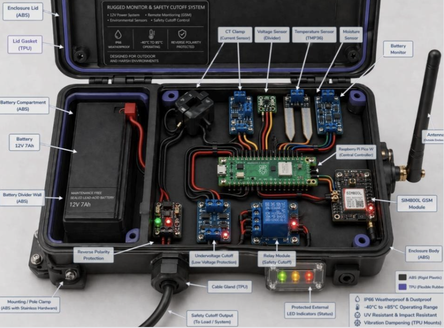
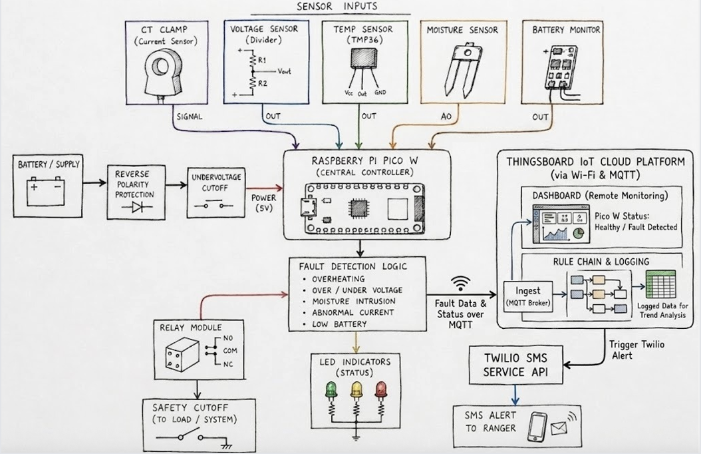
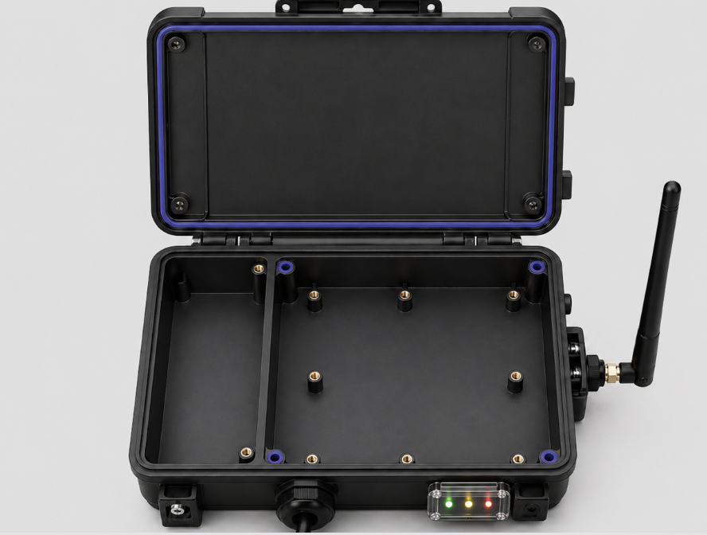
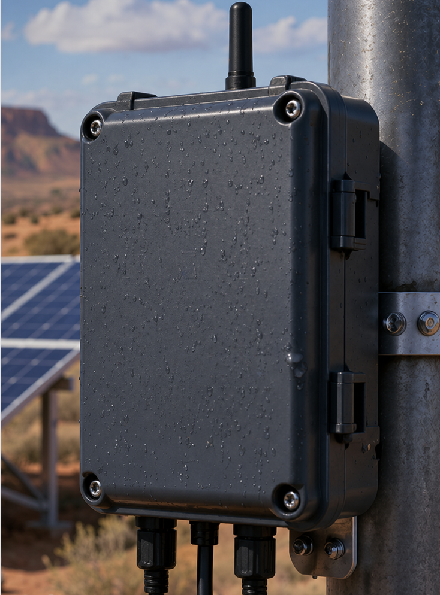
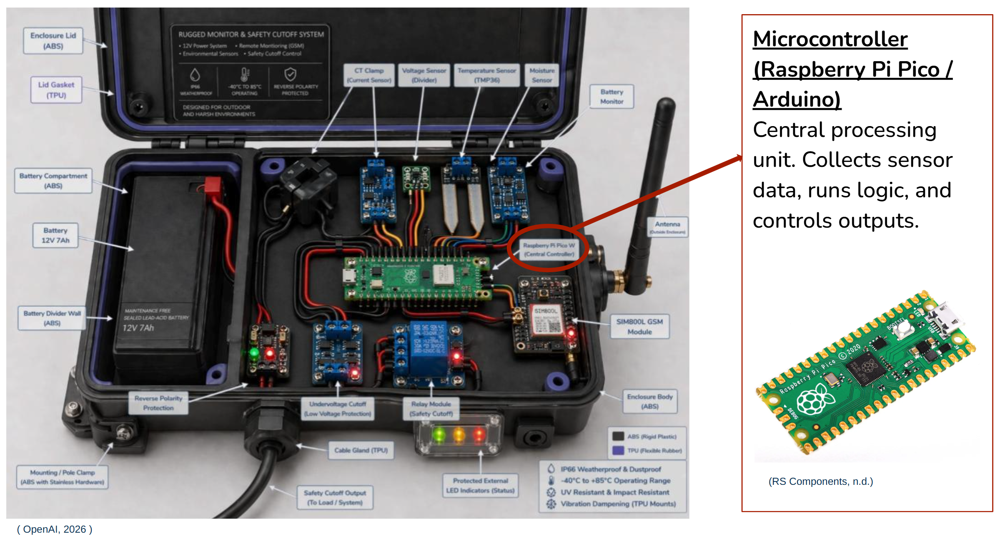
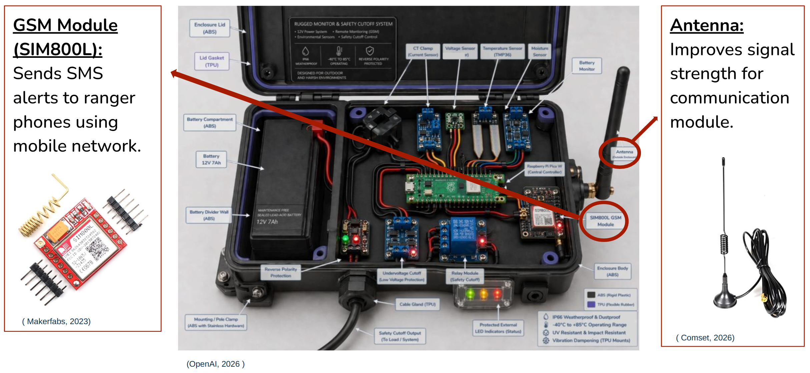
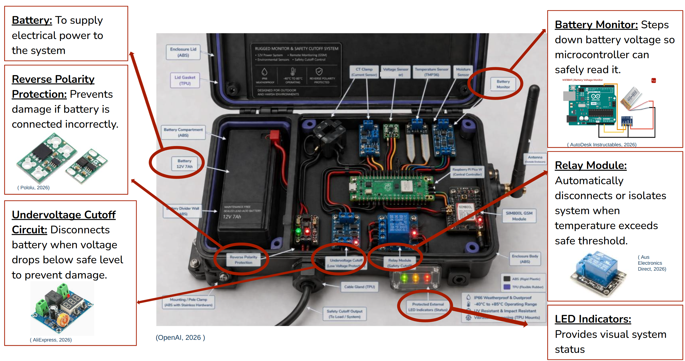
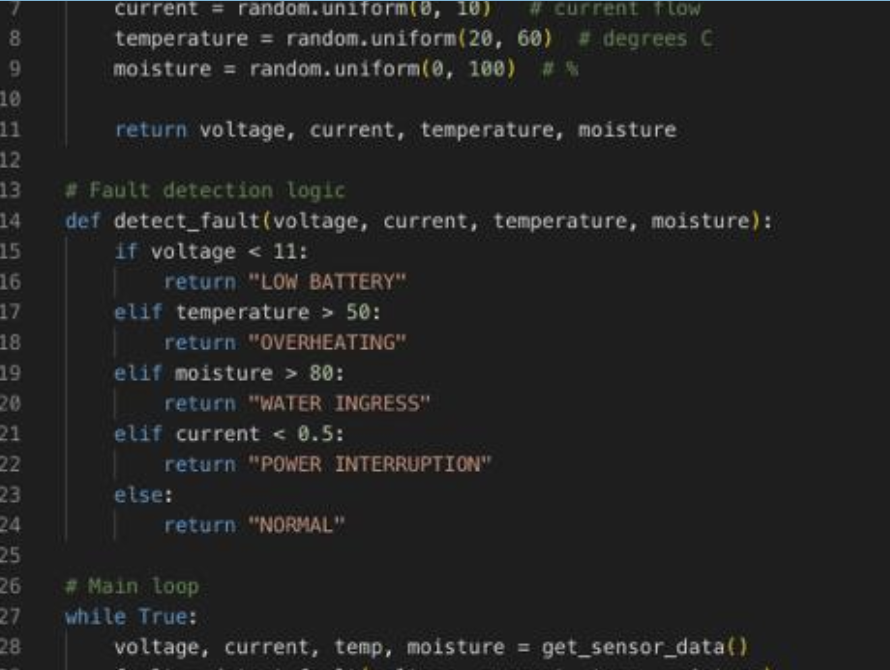
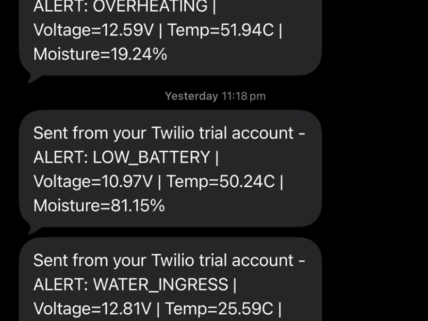

01
Raspberry Pi Pico W
The main controller — reads all sensor inputs, runs the threshold-based fault detection logic, and triggers alerts.
Team 7 proposes an intelligent monitoring and fault detection system for Stand-Alone Power Systems (SAPS). The solution is designed in response to the needs of the Port Stewart community — reflecting local cultural values while addressing the environmental challenges and economic constraints of operating energy systems in remote areas.
Our solution improves the reliability and long-term performance of SAPS by enabling early fault detection, reducing the risk of equipment damage, and minimising system downtime. By providing timely insights into system health, it also supports faster and more effective remote maintenance responses.
This is achieved through continuous monitoring of key operating parameters — current, voltage, temperature, and moisture levels. The collected data is analysed using threshold-based fault detection methods to identify abnormal operating conditions. When potential issues are detected, the system automatically sends SMS alerts, allowing operators and maintenance teams to respond quickly before faults escalate.
By collecting and tracking this data over time, operators can better understand energy generation, storage, and consumption patterns across the system. This supports more informed decision-making, improves operational efficiency, and ensures the power system can continue to meet the needs of the community under changing environmental conditions.
The prototype monitors current, voltage, temperature, moisture, and battery condition in remote energy systems. A Raspberry Pi Pico W processes the sensor data and detects faults such as overheating, abnormal current, low battery, and moisture intrusion. When a fault occurs, the system logs the data to ThingsBoard, displays LED status indicators, and sends an SMS alert to Rangers through Twilio.


The internal components include the main controller, sensors, power protection, communication module, relay module, battery, and wiring. These parts work together to collect energy system data, detect faults, and trigger alerts when unsafe conditions occur.
The layout keeps the battery separated from the electronics to improve safety, while the sensors and modules are arranged clearly for maintenance and testing.

The external enclosure protects the prototype from harsh remote conditions — dust, rain, heat, vibration, and possible wildlife interference. It includes a rugged ABS body, flexible TPU sealing, external antenna, cable gland, LED status window, and mounting points.
These features make the system suitable for outdoor field use in remote energy monitoring deployments.

The main controller — reads all sensor inputs, runs the threshold-based fault detection logic, and triggers alerts.

Current, voltage, temperature, and moisture sensors capture the full electrical and environmental picture of the SAPS.

Sends SMS alerts over cellular networks via Twilio — no internet required, works on low bandwidth.

Supports safety cutoff when unsafe conditions are detected, and protects downstream electronics from surges.

Kept separated from electronics for safety. LED status indicators provide at-a-glance system health for Rangers in the field.
The internal hardware includes sensors, power protection circuits, a Raspberry Pi Pico controller, GSM communication, relay cutoff, battery monitoring, and LED indicators.
Sensors collect current, voltage, temperature, moisture, and battery data. The Raspberry Pi Pico checks these values against fault thresholds and identifies unsafe conditions. If a fault is detected, the relay can support safety cutoff, the LEDs show the system status, and the GSM module sends an alert to maintenance staff or Rangers.
The external design focuses on protecting the monitoring device in harsh remote conditions. The enclosure is mounted on a pole near the energy system and protects the internal sensors, controller, battery, and communication module from rain, dust, heat, vibration, and possible wildlife interference.
It includes an external antenna for GSM communication, cable entry points for power and sensor wiring, and a visible LED status window for quick field checking.
The firmware runs locally on the microcontroller and does not rely on cloud infrastructure. Decisions are made on-device using threshold logic, so the system continues to detect faults even when connectivity drops out.

The fault detection program uses threshold-based logic to decide whether the system is operating normally or experiencing a fault. Sensor readings — voltage, current, temperature, and moisture — are checked against predefined safe limits. If a value exceeds the limit, the system identifies the fault type, such as low battery, overheating, water ingress, or power interruption.
This simple logic is suitable for the prototype because it is easy to test, adjust, and explain. The thresholds can also be changed later based on real field data.

The SMS alert system sends a warning message when the software detects a fault. The alert includes the fault type and key sensor readings — voltage, temperature, and moisture level — allowing Rangers or maintenance staff to understand the issue without needing to check the physical device immediately.
SMS was chosen because it is more suitable for remote areas where internet access may be weak or unreliable. Even if dashboard access is limited, urgent alerts can still be sent through the GSM/Twilio alert system.

ThingsBoard is used as the remote monitoring dashboard for the prototype. It displays sensor readings, device status, and logged fault events, helping users check whether the energy system is operating normally or if a fault has been detected.
Five core technologies make the prototype work together. Each was chosen deliberately for its fit with remote, low-bandwidth operation on Country.
Remote monitoring dashboard — displays sensor readings, device status, and logged fault events.
Lightweight messaging protocol that transfers sensor data on low-bandwidth, intermittent connections.
SMS alert system — sends fault type, voltage, temperature, moisture, device ID, and location.
Circuit and logic simulator — sensor values can be changed manually to verify fault response.
Testing is divided into two areas: hardware material testing and software simulation testing. Hardware testing focuses on the physical materials used for the enclosure — specifically ABS and TPU — tested separately because they serve different purposes. ABS is used for the rigid structure, while TPU is used for flexible sealing and protection.
Software testing focuses on whether the monitoring logic works correctly in simulation. Wokwi is used to test sensor input values and fault detection logic, while ThingsBoard is used to check whether readings and fault statuses can be displayed on a remote dashboard.
Software is tested through simulation before full field deployment. Wokwi simulates sensor readings — voltage, temperature, moisture, current, and battery level — which are adjusted to verify fault detection. ThingsBoard confirms that readings and fault statuses display correctly on the dashboard.
TPU is tested as the flexible protective and sealing material of the enclosure — representing the soft parts such as the lid gasket, cable gland seal, antenna seal, LED window seal, and vibration-damping parts. The purpose is to confirm TPU resists moisture, dust, vibration, and repeated opening or handling.
ABS testing checks whether the rigid enclosure parts can protect the internal hardware in remote conditions. Tests focus on heat resistance, impact resistance, dust exposure, structural strength, and mounting stability — important because ABS forms the main protective shell of the prototype.